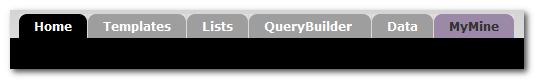
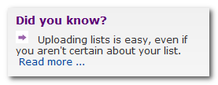
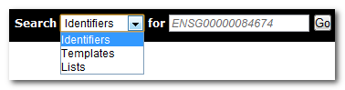
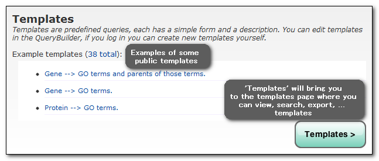
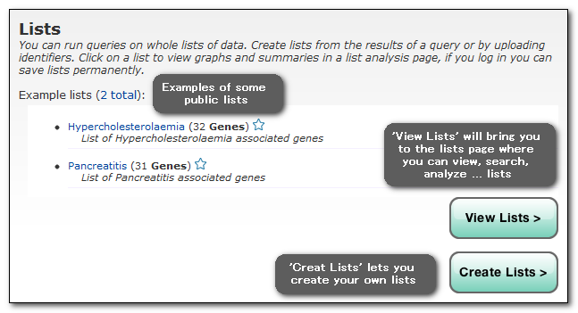
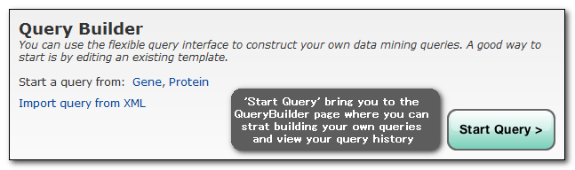

The basics
The TargetMine home page provides starting points to the different ways in which data can be accessed, queried and manipulated. The toolbar is repeated on every page to make navigation through all these options more easy:
Have a look at our tips to find out more about TargetMine:
Accessing data
There are four ways to query or access the data in TargetMine, all can be directly accessed from the homepage (or from the toolbar on every TargetMine page):
1. Search - allows you to browse all the available data for one particular object. Type in any identifier to see a report page. You can also use the Search box to quickly find a template or list. However, the Lists and Templates pages provide more advanced search options!
2. Templates - are predefined queries that allow you to quickly and easily run a query. You can also make them yourself with the QueryBuilder.
3. Lists - allows you to view and analyse lists and run queries on the entire list in one go. You can upload and make your own lists.
4. Query Builder - allows you to build you own custom query
Finally, different data types (called data categories) are listed to give an immediate overview of what TargetMine has to offer. The icons will bring you to the resepective data category pages.
![[begin]](home_data.png)